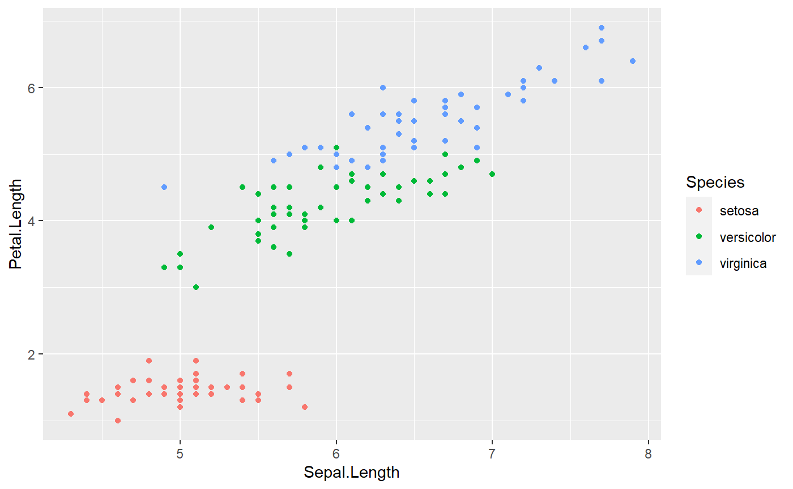

The primary goal of the flair package is to provide tools for presenting R code.
It is common to show source code, in addition to code output, as part of a conference talk, workshop, or lecture. Often, we want to call attention to certain aspects of the code.
For example, suppose you want to illustrate to a new learner the use of the pipe %>%. You might want to create a slide that shows the following:
iris %>%
group_by(Species) %>%
summarize(mean(Sepal.Length))
#> # A tibble: 3 x 2
#> Species `mean(Sepal.Length)`
#> <fct> <dbl>
#> 1 setosa 5.01
#> 2 versicolor 5.94
#> 3 virginica 6.59
Without flair, your approach might be to type your code into your code chunk, copy-paste it to a string, and manually format that string using html to add the background highlighting to the pipes. What a headache!
In this vignette, we will show you how to use the flair package to add decorative formatting to your source code.
with_flair ObjectsThe core element of the package is an object of the class with_flair. These objects contain both the natural output of your R code and your flaired-up source code.
The cleanest way to add flair to your code is to reference a named code chunk in R Markdown.
For example, your code chunk might look like:
```{r how_to_pipe, include = FALSE}
iris %>%
group_by(Species) %>%
summarize(mean(Sepal.Length))
```
We would use the decorate() function, referencing our chunk named how_to_pipe to prepare the source code for decoration. Then we could use the function flair() to show our source code with the pipe operators highlighted in yellow.
```{r, echo = FALSE}
decorate("how_to_pipe") %>%
flair("%>%")
```
Note that the decorate and flair step should be in a separate chunk, since it is not itself part of the source code you wish to decorate.
With the above two code chunks in our source file, the resulting knitted output looks like this:
iris %>%
group_by(Species) %>%
summarize(mean(Sepal.Length))
#> # A tibble: 3 x 2
#> Species `mean(Sepal.Length)`
#> <fct> <dbl>
#> 1 setosa 5.01
#> 2 versicolor 5.94
#> 3 virginica 6.59
A nice consequence of using the chunk label approach to flair is that the same chunk can be displayed multiple times, with different flair decorations, without needing to retype the original code.
For example, you might want to create the following for classroom purposes:
Where are the functions?
decorate("how_to_pipe") %>%
flair_funs()iris %>%
group_by(Species) %>%
summarize(mean(Sepal.Length))
#> # A tibble: 3 x 2
#> Species `mean(Sepal.Length)`
#> <fct> <dbl>
#> 1 setosa 5.01
#> 2 versicolor 5.94
#> 3 virginica 6.59
Where are the inputs?
decorate("how_to_pipe") %>%
flair_input_vals()iris %>%
group_by(Species) %>%
summarize(mean(Sepal.Length))
#> # A tibble: 3 x 2
#> Species `mean(Sepal.Length)`
#> <fct> <dbl>
#> 1 setosa 5.01
#> 2 versicolor 5.94
#> 3 virginica 6.59
(Here we have left the options echo = TRUE for the chunks that call the decorate() and flair_*() functions, for you to see the source code. In practice, you would not display these chunks.)
You can also use the decorate function to add flair to R code supplied directly as a string. For example
produces
iris %>%
group_by(Species) %>%
summarize(mean(Sepal.Length))
#> # A tibble: 3 x 2
#> Species `mean(Sepal.Length)`
#> <fct> <dbl>
#> 1 setosa 5.01
#> 2 versicolor 5.94
#> 3 virginica 6.59
For the most part, we do not recommend this option, as it is more difficult to pre-test your code in string from than in a true chunk.
However, this option is particularly nice if you want to show “bad” code that cannot normally be evaluated. For example:
mean(not_an_object)
#> Error in mean(not_an_object): object 'not_an_object' not found
decorate
The function decorate does its best to tell when it is receiving input of a chunk label versus code-as-text. However, in the event that something goes awry, you can always be explicit by using functions decorate_code() and decorate_chunk()
decorate_code('mean(1:10)') %>%
flair("(")decorate_chunk('how_to_pipe') %>%
flair("%>%")flair_* functionsThe advantage of a with_flair object is that you can add formatting to the source code without altering the output. This decorative formatting is specified through the suite of flair functions
The main function you will use is simply flair(). This takes as arguments:
A flair object or a text string.
A fixed string pattern to match
Any number of formatting parameters
If no formatting parameters are supplied, flair_* will default to ordinary yellow-background highlighting.
flair returns a with_flair object, so it is pipe friendly!
Refer back to the how_to_pipe chunk above. Suppose you want to highlight the pipe operator (%>%) in yellow, highlight the variable name Sepal.Length in pink, and change the text color of Species to blue
decorate('how_to_pipe') %>%
flair("%>%") %>%
flair("Sepal.Length", background = "pink") %>%
flair("Species", color = "CornflowerBlue")iris %>%
group_by(Species) %>%
summarize(mean(Sepal.Length))
#> # A tibble: 3 x 2
#> Species `mean(Sepal.Length)`
#> <fct> <dbl>
#> 1 setosa 5.01
#> 2 versicolor 5.94
#> 3 virginica 6.59
If you only need to highlight certain lines of your code, you can do so:
decorate('how_to_pipe') %>%
flair_lines(2:3)iris %>%
group_by(Species) %>%
summarize(mean(Sepal.Length))
#> # A tibble: 3 x 2
#> Species `mean(Sepal.Length)`
#> <fct> <dbl>
#> 1 setosa 5.01
#> 2 versicolor 5.94
#> 3 virginica 6.59
Important Notes:
echo option in R Markdown chunks, flair_lines only counts lines with code content, not whitespace.flair_lines only works with the default yellow-background highlighting. (Sorry!)The function flair_rx takes pattern matching input in the form of a regular expression, rather than a fixed string.
(In fact, all flair_* functions are built on flair_rx.)
flair also includes a few shortcuts for highlighting specific aspects of R source code. Currently, these functions are:
flair_funs() for functions
flair_args() for arguments to functions
flair_input_vals() for values assigned to function arguments
For example:
decorate('
ggplot(iris, aes(x = Sepal.Length,
y = Petal.Length,
color = Species)) +
geom_point()
') %>%
flair_args(color = "CornflowerBlue") %>%
flair_funs(color = "Coral", underline = TRUE) %>%
flair_input_vals(background = "Aquamarine") %>%
flair_rx("[A-z]*\\.Length", background = "pink")ggplot(iris, aes(x = Sepal.Length,
y = Petal.Length,
color = Species)) +
geom_point()
One nice feature the decorate function is that it evaluates the referenced code when it is run. This means that you can define objects in your source code, and use them later in your analysis as you normally would:
decorate('foo <- mean(1:10)') %>%
flair_funs()foo mean(1:10)#> [1] 10.5A word of caution: Make sure you define your objects in your code string, not outside the decorate() function! For example, the following approach has two problems:
foo contains the output object itself, rather than the result of the R code mean(1:10), so foo + 5 throws an error.
The output object of decorate is being assigned to foo rather than printed, so no highlighted code is included in the knitted output.
foo <- decorate('mean(1:10)') %>%
flair_funs()
foo + 5#> Error in foo + 5: non-numeric argument to binary operatorflair gives you complete freedom to choose the colors of your highlighted elements, so long as the color name is a recognized html name or a hex code.
However, please remember to be judicious in your color choices, and to keep in mind how your colors appear to colorblind individuals.